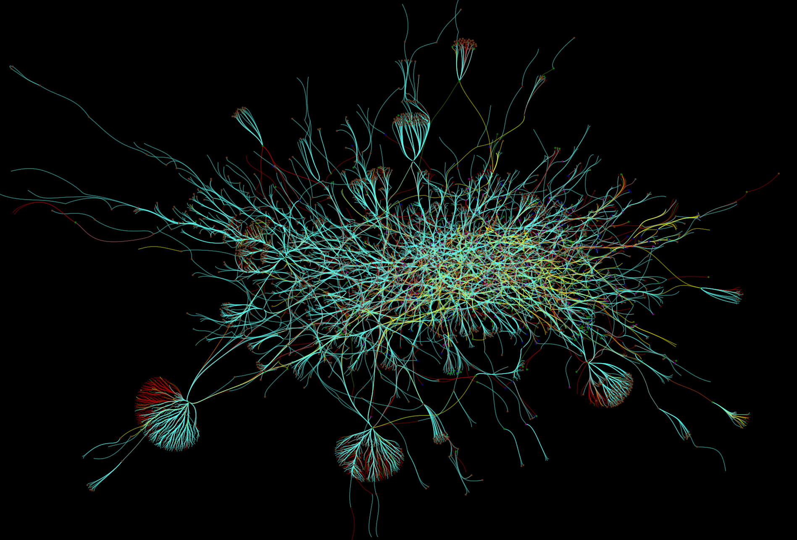

Network Visualization¶
The Viking web services can export files for use in external tools.
For more technical users exporting directly using URL’s is documented below
Prerequisites¶
For graph visualization we recommend using Tulip and the TLP file format. We also provide .dot files for use with Graphviz.
Export directly from a URL¶
Exports are available under a volume URL’s /export/ subpath. An Export URL has the following components
-
GET/export/( report_type )/( format )/¶
Neuron connectivity network¶
-
GET/export/network/( Format )¶ Requests the connectivity graph for the neurons specified in the query string.
- Format:
- TLP - Tulip file format
- DOT - Graphviz DOT file format
- GraphML - GraphML file format
- JSON - Java script object notation
Query Parameters: - id – ID numbers of cells to include in connectivity graph. Commas seperate multiple IDs.
- hops – Degrees of seperation to include additional neurons in graph
Response Headers: - Content-Type – text/plain
Example request
Get all cells within one degree of seperation of cells 476 and 514.
http://websvc1.connectomes.utah.edu/RC1/export/network/tlp?id=476,514&hops=1
Get all cells in the network:
http://websvc1.connectomes.utah.edu/RC1/export/network/tlp

Motif connectivity¶
-
GET/export/motif/( Format )¶ Connectivity between classes of neurons based on label. Includes all neurons.
- Format:
- TLP - Tulip file format
- DOT - Graphviz DOT file format
- GraphML - GraphML file format
- JSON - Java script object notation
Response Headers: - Content-Type – text/plain
Example request
Get a dot file of the morphology for use in Graphviz
http://websvc1.connectomes.utah.edu/RC1/export/motifs/dot

Morphology¶
-
GET/export/morphology/( Format )¶ Returns a 3D graph using annotations to determine node position.
Nodes with a glowing effect are involved in a structure link.
- Format:
- TLP - Tulip file format
- JSON - Java script object notation
Query Parameters: - id – ID numbers of cells to include in connectivity graph. Commas seperate multiple IDs.
Response Headers: - Content-Type – text/plain
Example request
Get the morphology of cells 180 and 476.
http://websvc1.connectomes.utah.edu/RC1/export/morphology/tlp?id=180,476